Cezary Walenciuk
Kariera Programisty
Dlaczego Ty postanowiłeś zostać
programistą?
Czy każdy może zostać programistą?
Najczęstrze zadawane pytania na blogu:
- "Co" uczyć się w programowaniu?
- Czy muszę ukończyć studia?
- Czy mogę zmienić profesję?
- Czy myśli pan, że dam radę?
- Czy ja [moja historia] mogę być programistą?
Co Ciebie obchodzi co ja myśle o Twoim
marzeniu!
Historia AKT 0 :
Bycie nikim
Copyright © 2019 https://pixabay.com/pl/photos/stres-programista-etnwickler-ibm-1331259/
Historia AKT II :
Trening
Jak uczyć się programowania?
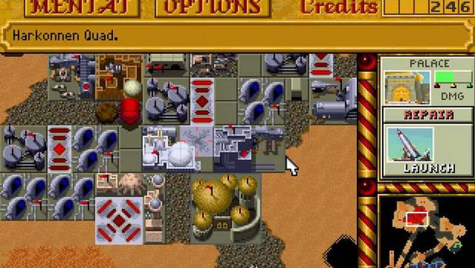
Copyright © 2019 Dune 2
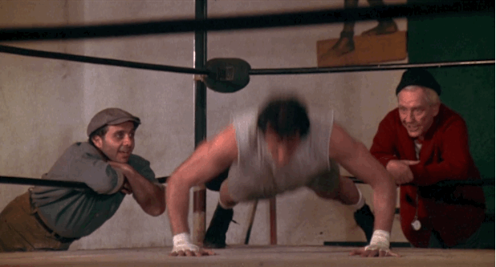
Copyright © 2019 MOVIE ROCKY
Jak sprzedać swoje umiejętności ?
 Copyright © 2019 Cezary Walenciuk
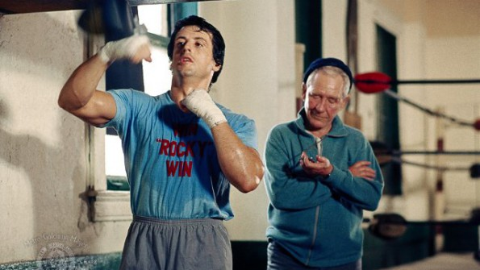
Copyright © 2019 MOVIE ROCKY
Copyright © 2019 Cezary Walenciuk
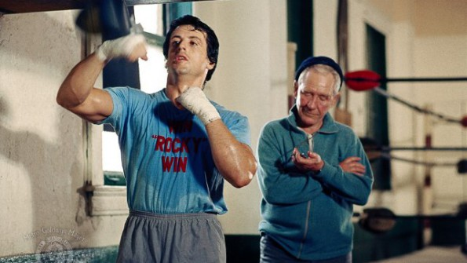
Copyright © 2019 MOVIE ROCKY
Historia AKT III :
15 rozmów o pracę do zwycięstwa
Szukanie pracy
- Fail Fast
- Wystrwałość zostanie nagrodzona
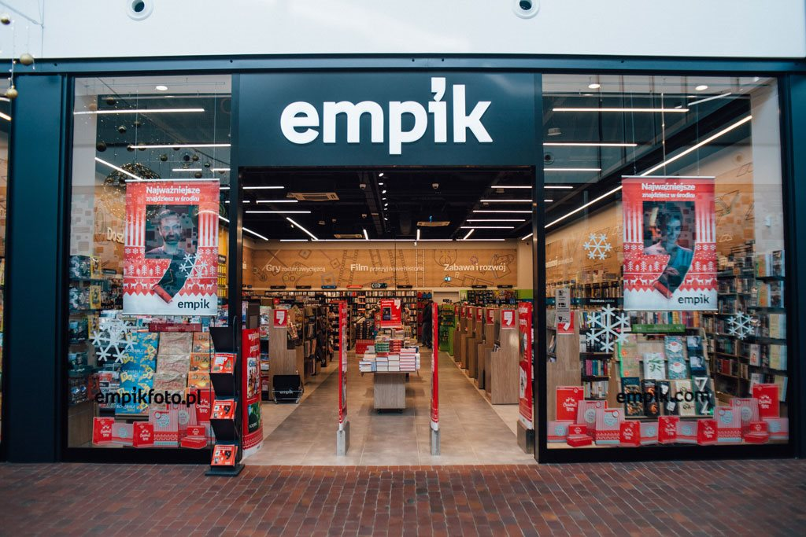
Copyright © 2019 EMPIK
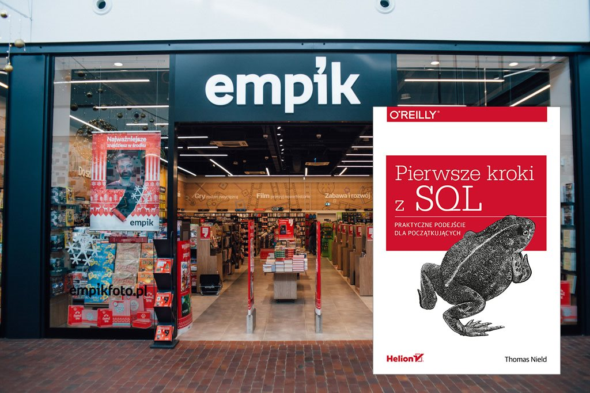
Copyright © 2019 EMPIK HELLION
 Copyright © 2019 https://pixabay.com/pl/photos/karate-zach%C3%B3d-s%C5%82o%C5%84ca-walki-2578819/
Copyright © 2019 https://pixabay.com/pl/photos/karate-zach%C3%B3d-s%C5%82o%C5%84ca-walki-2578819/
Im gorsze rozmowy kwalfikacyjne miałem tym bardziej wiedziałem,
jak lepiej poprowadzić następną rozmowę
Historia AKT IV :
Happy ending?
 Copyright © 2019 https://pixabay.com/pl/illustrations/lonely-cz%C5%82owiek-p%C5%82acz-samodzielnie-1510265/
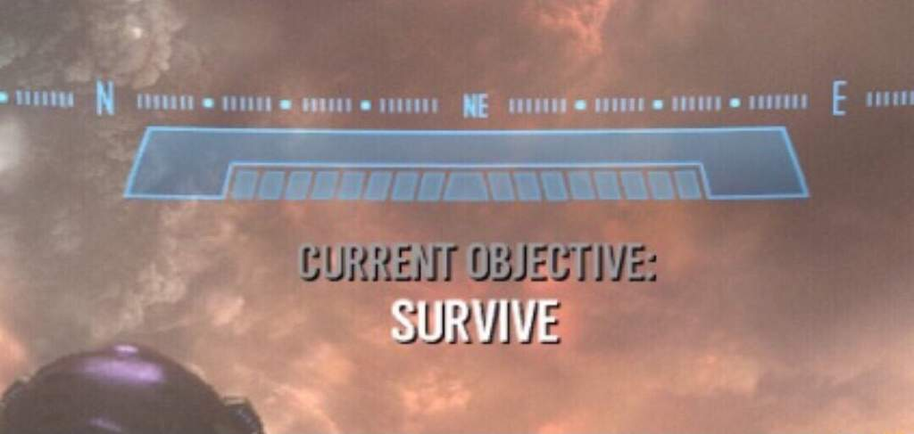
Copyright © 2019 Cezar Walenciuk
Copyright © 2019 https://pixabay.com/pl/illustrations/lonely-cz%C5%82owiek-p%C5%82acz-samodzielnie-1510265/
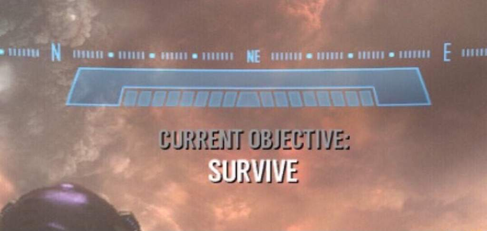
Copyright © 2019 Cezar Walenciuk
 Copyright © 2019 https://pixabay.com/pl/photos/ch%C5%82opak-system-binarny-fikcja-258445/
Copyright © 2019 https://pixabay.com/pl/photos/ch%C5%82opak-system-binarny-fikcja-258445/
 Copyright © 2019 Halo
Copyright © 2019 Halo
🤔Dlaczego nie możesz znaleźć pracy?
- Ktoś bardziej doświadczony kradnie Ci pracę
- Nie masz dowodu swojej wiedzy
- Co czyni Ciebie wyjątkowym?
- Jesteś leniem i żyjesz w kłamstwie by nie zranić siebie
- Rynek programistów się zepsuł od 2012 roku
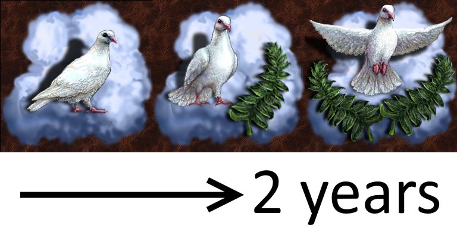
Copyright © 2019 Heroes III
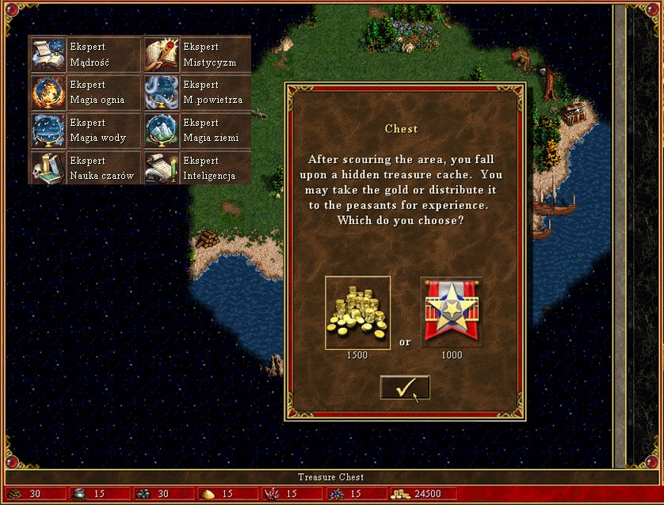
Copyright © 2019 Heroes III
 Copyright © 2019 https://twitter.com/thepracticaldev/
Copyright © 2019 https://twitter.com/thepracticaldev/
Czy jesteś programistą👨💻👩💻 czy jesteś fałszywy
 Copyright © 2019 Cezary Walenciuk
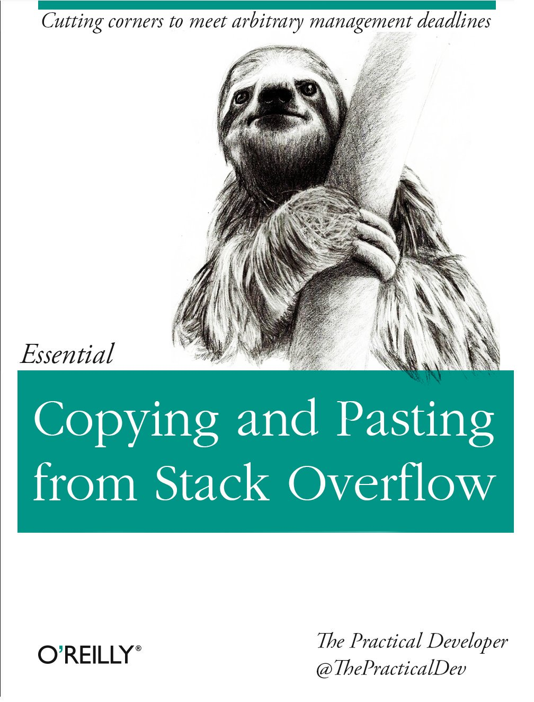
Copyright © 2019 https://twitter.com/thepracticaldev/status/705825638851149824
Copyright © 2019 Cezary Walenciuk
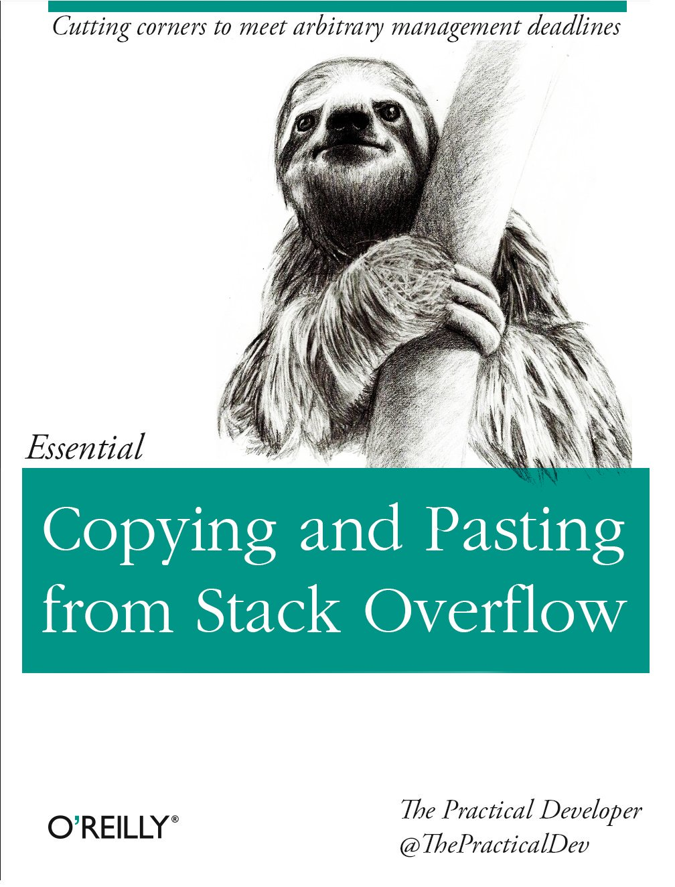
Copyright © 2019 https://twitter.com/thepracticaldev/status/705825638851149824
 Copyright © 2019 Google
Copyright © 2019 Google
Jquery : poziom średni.
Jak ja bardzo kłamię?
To rekruter ocenia Ciebie
Co dalej z tą karierą programisty?
👻Jakie są problemy z długą trwałą pracą programisty?
- Praca wydaje się monotona
- Praca daje Ci 99 pretensji o błędy i tylko 1 podziękowanie, że coś działa
- Programujesz ciągle w tym samym gównie💩 i ktoś musi to robić🤷
- Wypalenie
- Wypalenie
- Wypalenie 2 : Zemsta
- Wypalenie 3 : Pierwsza krew
- Wypalenie 4 : Zemsta 2
- Wypalenie 5 : Ostatni rodział
- Wypalenie 6 : Zmierzch
- Wypalenie 7 : Definitywne starcie
- Wypalenie 8 : Kolejny odcien
- Wypalenie 9 : Powrót
- Wypalenie XXX DEKALOG W KOSMOSIE
- Wypalenie 11 : Apokalipsa
- Wypalenie 12 : Odrodzenie
- Wypalenie 13 : Definitywne starcie 2
😶Jak radzić sobie z wypaleniem:
- Robienie nic
- Traktowanie pracy zbyt poważnie
- Kontakt z najbliższymi
- Branie udział w wydarzeniach
- Inne pasje niż programowanie
- Zmiana pracy
👴Jakie są problemy z karierą programisty później?
- Zasiedzenie się w jednej firmie za długo
Jeśli wasz szef manipuluje wami byście pracowali za darmo po godzinach to niech wypi...
 Copyright © 2019 https://pixabay.com/pl/photos/miejsca-pracy-zesp%C3%B3%C5%82-1245776/
Copyright © 2019 https://pixabay.com/pl/photos/miejsca-pracy-zesp%C3%B3%C5%82-1245776/
 Copyright © 2019 MEME
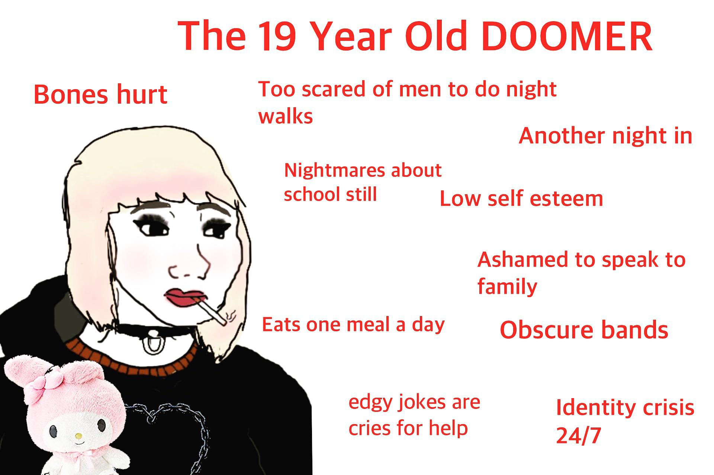
Copyright © 2019 MEME
Copyright © 2019 MEME
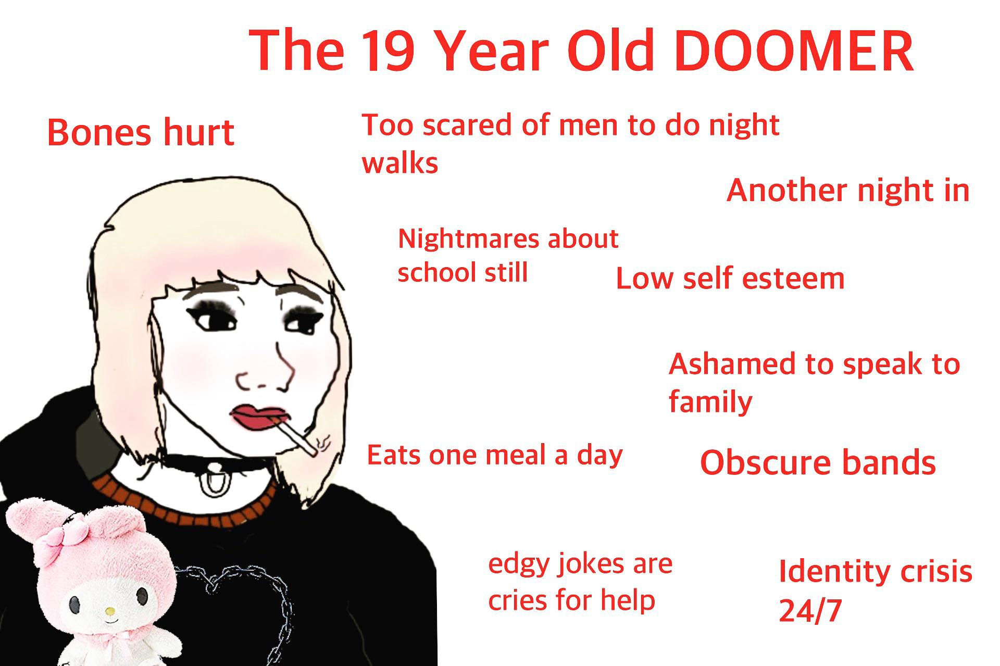
Copyright © 2019 MEME
Jak rozwijałem swoje umiejętności miękkie
- Zacząłem przemawiać jako student w Grupach .NET
- Potem 5 lat spędziłem w klubach mówców Toastmasters
- Założyłem swój klub mówców : Ninja Speakers
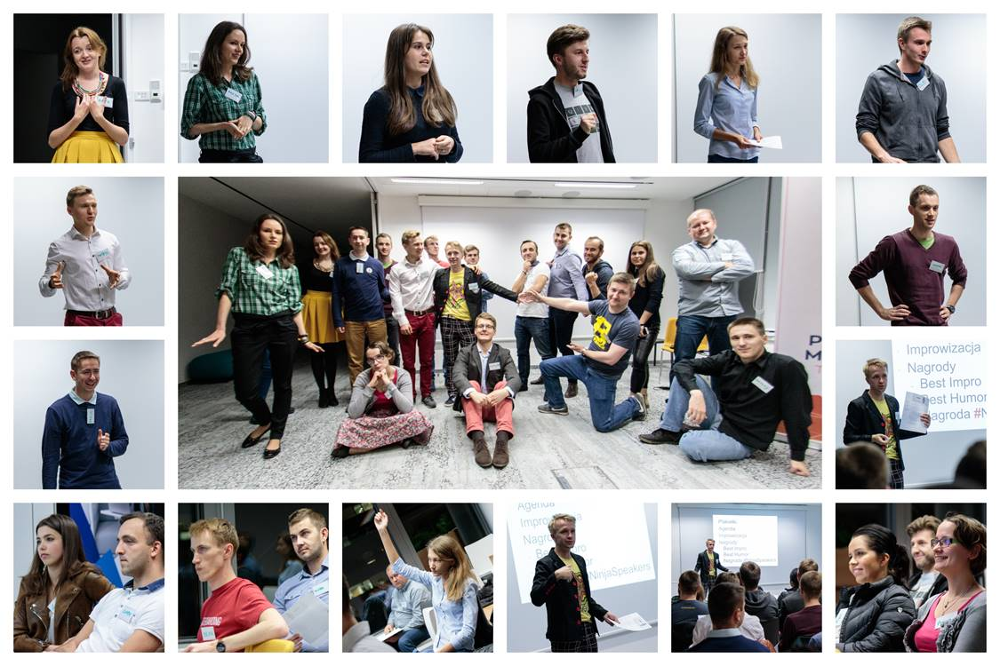
Copyright © 2019 Cezar Walenciuk
Co robić po programowaniu?
Co robić po programowaniu?
- Zostać prelegentem?
- Zostać trenerem?
- Zostać osobą wypływową 🌞 ?
🤔Co mnie gryzie najbardziej w programowaniu?
- Czy programista musi pracować 8 godzin dziennie?
- Prawda jest taka, że pracowałeś tylko 4 godziny
- Jak firma mierzy efektywność Twojej pracy
- Jestem za mierzeniem zadaniowym niż czasowym
- Praca zdalna 2 razy w tygodniu to super pomysł
1. Zadeklaruj, że jesteś programistą i nawet czymś więcej
2. Nie czekaj na studia by odpalić swoją karierę
4. Stań się osobą niezastąpioną
5. Rozwijaj swoje umiejętności miękkie
 Copyright © 2019 https://pixabay.com/pl/photos/kod-edytor-kodu-kodowanie-komputer-1839406/
Copyright © 2019 https://pixabay.com/pl/photos/kod-edytor-kodu-kodowanie-komputer-1839406/
Kariera programisty jest niesamowita.
Jednego dnia możesz być na dnie, a innego być na księżycu
Kluczem do sukcesu jest nie tylko pasja. Jest to też Twoja grawitacja w której przyciągniesz programistyczne pomysły
Copyright © 2019 Kod do strony